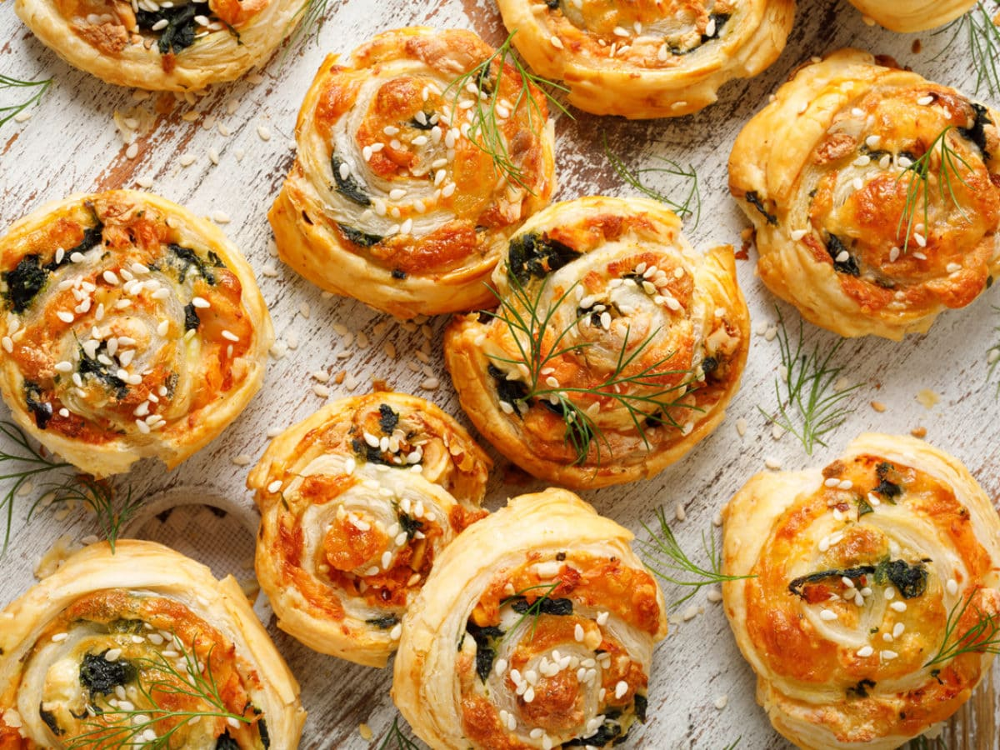
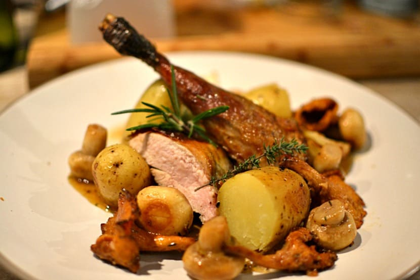
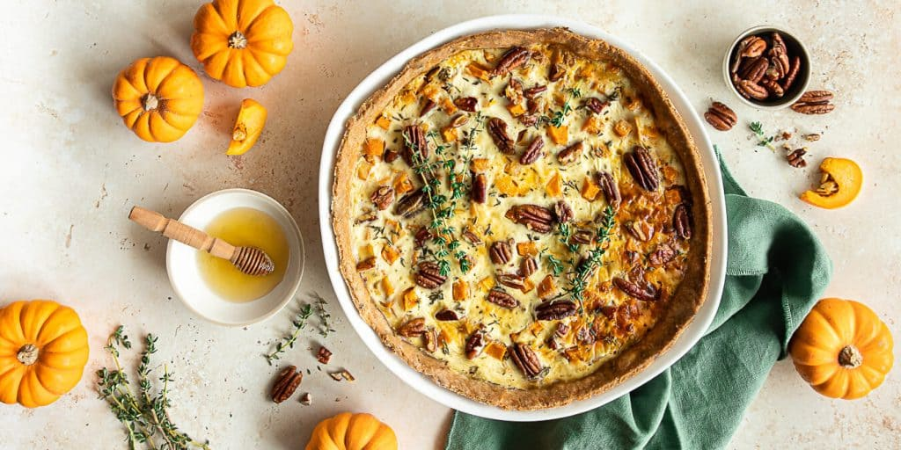

Recettes Salées

Feuilletés au Saumon et Épinards
Ingrédients : Pâte feuilletée, saumon, épinards, oignon, ail, fromage à la crème, œuf, sel, poivre, aneth.
Préparation : Préchauffe ton four à 180°C, fais revenir l'oignon et l'ail, ajoute les épinards et le saumon, puis forme des feuilletés et enfourne 15 minutes.

Rôti de Dinde aux Cèpes et Pommes de Terre
Ingrédients : Rôti de dinde, cèpes, pommes de terre, oignon, ail, thym, beurre, sel, poivre.
Préparation : Préchauffe le four, fais cuire les légumes et les cèpes, ajoute le rôti de dinde et enfourne 1h30.

Quiche à la Courge, Chèvre et Noix de Pécan
Ingrédients : Courge, fromage de chèvre, noix de pécan, œufs, crème, oignon, miel, pâte brisée.
Préparation : Préchauffe le four, prépare la purée de courge, ajoute l'oignon et les autres ingrédients, et enfourne pendant 35 minutes.